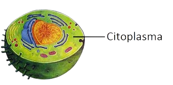
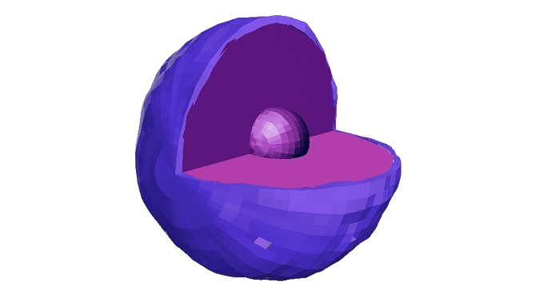
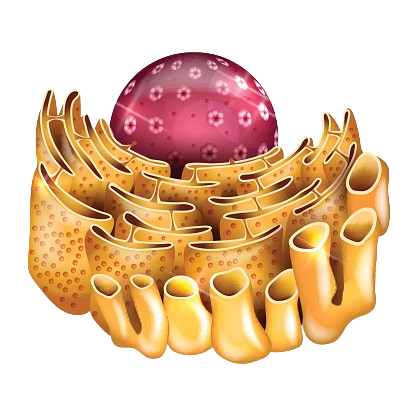

As organelas celulares se encontram no citoplasma e são componentes das células que realizam
atividades essenciais para as células. Suas estruturas são compostas
por membranas internas com formas e funções diferentes, algumas
organelas são exclusivas de células vegetais ou animais.
O QUE SÃO
Mitocôndria
RER
Lisossomos
Aparelho de Golgi
Citoplasma
Núcleo
Cloropasto
Ribossomos
REL
Peroxissomos
Membrana Plasmática
Centríolos
Parede Celular
Vacúolos
Mitocôndria
As mitocôndrias são organelas celulares encontradas em grande quantidade com grande
atividade metabólica, o número de mitocôndrias varia de uma célula para outra, porém,
normalmente, observam-se centenas de mitocôndrias em uma única célula. São organelas
compostas por membrana dupla, sendo uma externa e uma interna que apresenta muitas
dobras, as chamadas cristas mitocondriais. Dentro da membrana interna há a matriz
mitocondrial.
Na matriz mitocondrial, encontra-se uma grande quantidade de enzimas que atuam na
respiração celular, outras proteínas, material genético (DNA e RNA) e ribossomos.
A sua função é realizar a respiração
celular
que produz a maior parte da energia utilizada nas funções vitais do corpo.
A respiração celular é o processo pelo qual as células convertem nutrientes, como
glicose,
em energia utilizável, na forma de ATP (Trifosfato de Adenosina, é a principal molécula
de
armazenamento e transferência de energia nas células).
Quais os tipos de respiração celular?
Processo Aeróbico: A respiração aeróbica é o processo pelo qual as células
convertem
nutrientes, especialmente a glicose, em energia na presença de oxigênio. É o método
mais
eficiente de produção de ATP, gerando uma quantidade significativa de energia.
Processo Anaeróbico: A respiração anaeróbica é o processo pelo qual as
células
convertem
nutrientes, especialmente a glicose, em energia com baixa presença em oxigênio. É
menos
eficiente que a respiração aeróbica,
produzindo
uma quantidade menor de ATP. Em vez de oxigênio diretamente, outras substâncias
(como
nitratos,
sulfatos
ou carbono) atuam nas reações químicas.
As mitocôndrias são capazes de se fundir e de se dividir por fissão binária, assim
como
organismos procariontes.
Como ocorrem os processos:
RER
O retículo endoplasmático rugoso (RER) é uma organela presente nas células, responsável
pela síntese e transporte de proteínas. Sua superfície é coberta por ribossomos, o que
lhe confere uma aparência rugosa, daí seu nome. Esses ribossomos produzem proteínas que
são geralmente destinadas à membrana celular, a outras organelas, ou para exportação
fora da célula. Após a síntese, as proteínas são modificadas dentro do RER e
transportadas em vesículas para o Complexo de Golgi, onde são processadas e enviadas ao
seu destino final. O RER tem um papel fundamental em células que produzem grandes
quantidades de proteínas, como as células do pâncreas e as células imunológicas.
Lisossomos
Os lisossomos são vesículas envolvidas apenas pela bicamada lipídica e no seu interior há
enzimas digestivas. Sua função é digerir moléculas orgânicas como lipídios,
carboidratos, proteínas, DNA, RNA
e organelas em mau funcionamento.
O interior dos lisossomos é ácido pois possui enzimas digestivas, que quebram as
moléculas em pequenas porções, fazendo a digestão. As moléculas a serem digeridas são
englobadas por endocitose e entram na célula envolvidas em vesículas formadas a partir
da membrana chamados endossomas. Depois elas se fundem com os lisossomos primários e são
quebradas, originando partes menores, como os ácidos graxos. Essas moléculas pequenas
saem do lisossomo e são aproveitadas no citoplasma da célula.
O que é endocitose?
Endocitose é um processo que ocorre nas células e tem por objetivo trazer para o
interior dessa estrutura substâncias por meio da absorção na membrana
plasmática. A endocitose ocorre apenas em células eucariontes tanto em organismos
multicelulares
como em seres unicelulares.
Nos unicelulares, como protozoários, a endocitose é
fundamental para garantir a nutrição dessas células. Sendo assim, a endocitose
nesses organismos funciona como a principal forma de obter alimento.
Em organismos multicelulares, por sua vez, a endocitose tem um papel um pouco
diferenciado. Em nós, humanos, por exemplo, que possuímos uma digestão
extracelular,
as células não funcionam garantindo nossa nutrição. Nesse caso, a endocitose tem
papel primordial na defesa. Esse é o caso dos glóbulos brancos do nosso corpo,
que
captam partículas e organismos invasores.
Aparelho de Golgi
Aparelho de Golgi é composto de discos achatados empilhados, formando bolsas membranosas.
As funções do complexo golgiense são modificar, armazenar e exportar proteínas
sintetizadas no RER. Além disso, o aparelho de Golgi produz vesículas que brotam e se
soltam originando os lisossomos primários. No momento em que esses lisossomos primários
se fundem aos endossomas formam vacúolos.
Citoplasma
O citoplasma é a parte da célula que fica entre a membrana plasmática e o núcleo, onde
estão localizadas as organelas celulares. É composto por uma substância gelatinosa
chamada citosol, que contém água, sais, proteínas e outros nutrientes essenciais para a
célula. O citoplasma é o conjunto das organelas junto dessa substância, e serve como
meio de transporte de substâncias e é onde ocorrem muitas reações metabólicas
importantes, como a glicólise. Ele também ajuda a manter a forma da célula e dá suporte
às organelas, facilitando a movimentação e interação entre elas.

Núcleo
O núcleo é a principal organela da célula eucariótica, armazenando o DNA, que contém as
informações genéticas necessárias para regular as funções e a reprodução celulares.
Envolvido pela membrana nuclear ou envoltório nuclear, ele controla a passagem de
moléculas entre o núcleo e o citoplasma. Dentro do núcleo, encontramos o nucléolo, onde
ocorre a síntese de RNA ribossômico (rRNA), essencial para a formação de ribossomos. O
núcleo é, portanto, fundamental para a regulação da atividade genética e do ciclo
celular.

Cloropasto
Presentes apenas em células vegetais e em algumas algas, os cloroplastos são responsáveis
pela fotossíntese, processo que converte luz solar em energia química armazenada em
moléculas de glicose. Eles contêm o pigmento clorofila, que dá às plantas sua cor verde
e captura a luz solar. Como as mitocôndrias, os cloroplastos têm DNA próprio e são
formados por membranas internas chamadas tilacoides, onde ocorrem as reações de
fotossíntese.
Ribossomos
São as organelas mais abundantes nas células. Ribossomos são estruturas celulares,
presentes
em células procarióticas e eucarióticas, responsáveis pela síntese de proteínas. Essas
estruturas são formadas por duas subunidades, uma maior e uma menor, constituídas por
moléculas de RNA
e proteínas. Elas não possuem membranas.

REL
O retículo endoplasmático liso (REL) é uma organela presente nas células eucarióticas,
caracterizada pela ausência de ribossomos em sua superfície, o que lhe dá um aspecto
liso.
Suas funções são diversas, incluindo a síntese de lipídios (como fosfolipídios e
colesterol), o metabolismo de carboidratos, a desintoxicação de substâncias tóxicas e o
armazenamento de íons de cálcio, essencial para processos como a contração muscular. O
REL é
especialmente abundante em células que realizam a síntese de hormônios esteroides, como
as
células das glândulas suprarrenais, e em células do fígado, onde auxilia na
desintoxicação
de drogas e outros compostos químicos.
Peroxissomos
Elas são vesículas de enzimas envolvidas por uma membrana, em forma esférica. São organelas onde acontecem reações de oxidação, responsáveis por desintoxicar as células e o organismo, principalmente em órgãos como o fígado e os rins. As enzimas dos peroxissomos metabolizam substâncias estranhas às células e metabolizam.
Peroxissomos apresentam diferentes enzimas a depender da célula analisada. Nas células do fígado e dos rins, por exemplo, muitas substâncias tóxicas são oxidadas, como os medicamentos.
Nos peroxissomos encontrados nas células desses órgãos, podemos observar também que o álcool etílico que foi ingerido é transformado em aldeído acético, que é ácidos biliares e colesterol.
Peroxissomos possuem enzimas que convertem o peróxido de hidrogênio em água e oxigênio, protegendo a célula de danos oxidativos. Além disso, participam da degradação de ácidos graxos de cadeia longa, o que é essencial para o metabolismo celular.
Os glioxissomos são peroxissomos especializados encontrados em tecidos de armazenamento lipídico de sementes vegetais. Nessas células, essas organelas atuam convertendo ácidos graxos em açúcares, fornecendo a energia e o carbono necessários para que as plântulas consigam se desenvolver até serem capazes de realizar a fotossíntese e produzir seu próprio alimento.
Membrana Plasmática
A membrana plasmática envolve todas as células e regula o que entra e sai delas. Composta
por uma bicamada lipídica com proteínas embutidas, essa estrutura semipermeável mantém o
ambiente interno estável (homeostase)
, permitindo a entrada de nutrientes e a expulsão
de resíduos. Além disso, as proteínas da membrana desempenham funções de comunicação
celular e transporte de moléculas.
Centríolos
Os centríolos são pequenas estruturas cilíndricas formadas por microtúbulos, encontrados
nas células animais, próximos ao núcleo, dentro do centrossomo. Eles desempenham um
papel fundamental na divisão celular, ajudando a organizar o fuso mitótico que separa os
cromossomos durante a mitose e a meiose. Além disso, os centríolos participam na
formação de cílios e flagelos, estruturas que ajudam na locomoção celular. Apesar de
serem essenciais em células animais, muitas células vegetais não possuem centríolos,
utilizando outras estruturas para auxiliar na divisão celular. Como as placas celulares
e o Centro Organizador de Microtúbulos (MTOC).
O que são a Placa Celular e o MTOC
A placa celular é uma estrutura que se forma nas células vegetais durante a mitose,
quando as células se dividem, e que separa os citoplasmas das células filhas. A
placa celular é formada por vesículas que contêm pectina, celulose e hemicelulose,
que contribuem para a formação da parede primária e da lâmina média da nova parede
celular.
O Centro Organizador de Microtúbulos (MTOC) é uma estrutura celular que organiza os
microtúbulos e que tem como função organizar os cílios e flagelos eucarióticos e
organizar o fuso mitótico, que separa os cromossomas durante a divisão celular.
Parede Celular
Presente em células vegetais, fungos e algumas bactérias, a parede celular é uma
estrutura rígida que oferece suporte mecânico e proteção. Ela envolve a membrana
plasmática.
Nas plantas, é composta principalmente de celulose, um polissacarídeo que confere
resistência. A parede celular também ajuda a regular a entrada e saída de substâncias e
a manter a forma da célula.
Vacúolos
O vacúolos são desenvolvidos em células vegetais, e em algumas poucas células animais, é
uma grande vesícula de água que armazenam e regulam água, íons, nutrientes e resíduos.
Em células animais, os vacúolos são menores e têm funções variadas. Por exemplo, alguns
protozoários possuem vacúolo contrátil que regula o nível de água dentro da célula. E
algumas células formam vacúolos(chamados também de vacúolos digestivos) temporários
durante a interação dos lisossomos e das moléculas que estão sendo digeridas e logo
depois são desfeitos. Células animais não possuem vacúolos de reserva.
Os vacúolos de reserva são estruturas que armazenam diferentes tipos de substâncias
essenciais para a célula.
E em algumas células vegetais, ela mantém a pressão de turgor, essencial para a
sustentação das plantas, e também pode armazenar substâncias tóxicas ou de defesa contra
herbívoros. Podem digerir moléculas na ausência ou no suporte de lisossomos.
O que são vesículas?
As vesículas são pequenas estruturas membranosas presentes em células eucarióticas,
responsáveis por transportar substâncias dentro e fora das células. Elas são
formadas por uma camada de membrana lipídica semelhante à da membrana celular, o que
permite que elas se fundam e se separem facilmente de outras membranas celulares.
Isso as torna fundamentais no processo de transporte e comunicação intracelular.
O que é a Pressão de Turgor?
A pressão de turgor é a força exercida pelo conteúdo interno de uma célula vegetal
(principalmente a água dentro do vacúolo) contra a parede celular. Ela ocorre quando
a
célula vegetal absorve água por osmose, o que faz com que o vacúolo central se
expanda e
empurre o citoplasma contra a parede celular.
Essa pressão é fundamental para manter a forma e a rigidez das células vegetais,
contribuindo para que plantas e suas estruturas, como folhas e caules, permaneçam
firmes
e erguidas. Quando as células vegetais têm alta pressão de turgor, elas estão
"túrgidas", ou seja, cheias de água. Isso ajuda a planta a manter sua estrutura,
especialmente em folhas e caules mais jovens.
Por outro lado, se a planta perde água em excesso (como em condições de seca), a
pressão
de turgor diminui, as células ficam murchas e a planta perde a sua firmeza, podendo
murchar visivelmente. Assim, a pressão de turgor é essencial para o crescimento, a
sustentação e o movimento de algumas partes das plantas.